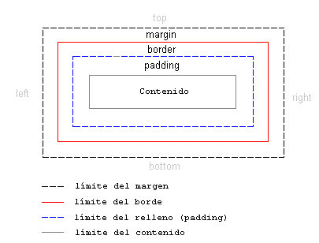
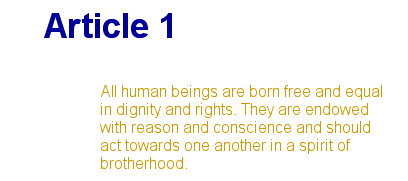
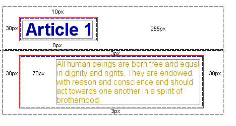

Lección 9: El modelo de caja
El modelo de caja en CSS describe las cajas que se generan a partir de los elementos HTML. El modelo de caja también contiene opciones detalladas en lo referente al ajuste de márgenes, bordes, relleno (padding) y contenido de cada elemento. La siguiente imagen muestra cómo se construye el modelo de caja:
El modelo de caja en CSS

A primera vista, la imagen anterior puede parecer muy teórica, así que intentemos usar el modelo en un caso real con un encabezado y algo de texto. El código HTML de nuestro ejemplo es el siguiente (extraído de la Declaración Universal de los Derechos Humanos):
<h1>Artículo 1:</h1>
<p>Todos los hombres nacen libres
e iguales en diginidad y derechos. Están
dotados de razonamiento y consciencia y
deberían de comportarse entre sí con
espíritu de hermandad.</p>
si añadimos algo de color e información sobre la fuente, el ejemplo se podría presentar así:

El ejemplo contiene dos elementos: el elemento <h1> y el elemento <p>. El modelo de caja para los dos elementos se puede ilustrar como sigue:

Aunque puede parecer un poco complicado, la imagen muestra cómo cada elemento HTML está rodeado por cajas, cajas que se pueden ajustar usando CSS.
Resumen
En esta lección hemos introducido el modelo de caja. En las tres lecciones siguientes examinaremos más detenidamente cómo crear y controlar elementos del modelo de caja.
Leccion Anterior